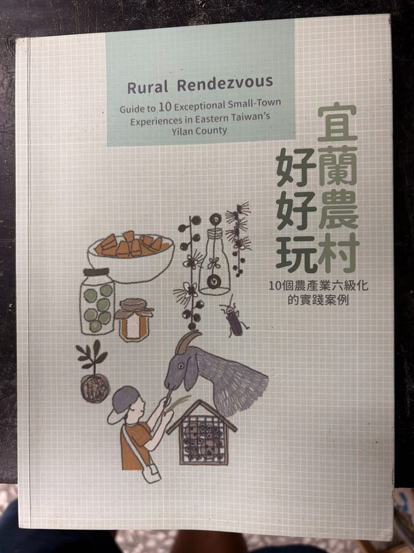
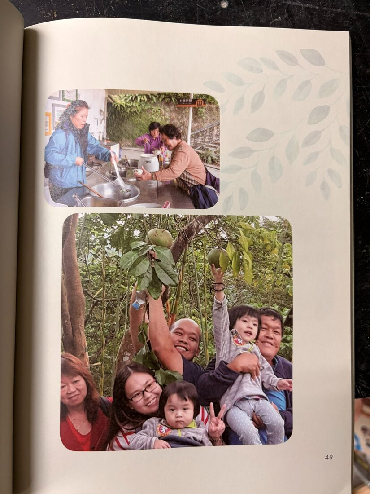
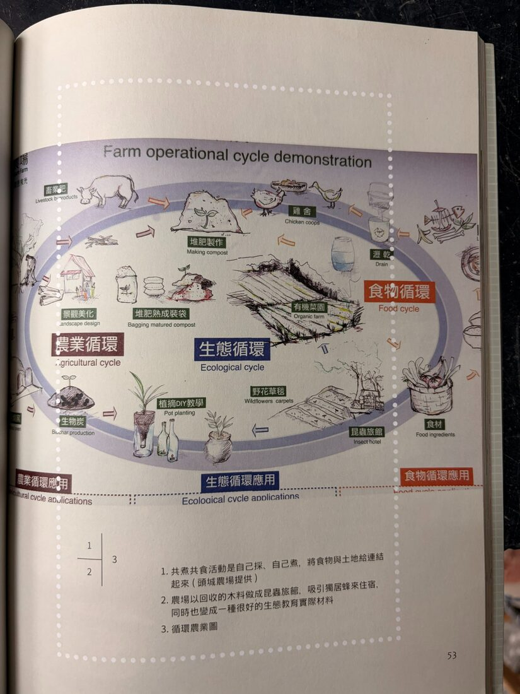

Agriculture · Food · Sustainability
卓媽媽：把農場變成一所沒有圍牆的學校
卓媽媽本名卓陳明，1940年生於臺中清水。她曾任教，也投入成衣事業；約四十歲時開始在頭城投入土地經營，後來成為頭城農場推動休閒農業的重要人物。她的故事不只是一段創業史，也呈現臺灣農業如何從生產走向體驗、教育與永續。
《山與海的職日生：頭城職人誌》進一步記錄了這段轉折：卓陳明自臺北女子師範學校畢業後，曾任國小教師十年，之後轉入成衣業。約四十歲時，她投入多年積蓄，在頭城梗枋山區購置約八十公頃土地，從不熟悉農務開始，重新學習彎腰、剪枝與拔草。書中並記載頭城休閒農場創設於1979年，後來整體規模超過一百公頃；不同資料對農場發展階段與創設年份的表述仍有差異，本站保留來源說法。
頭城農場以生態觀察、農事體驗、在地飲食與資源循環為核心，讓遊客從採集、烹煮與土地勞動理解食物從哪裡來。卓媽媽長年累積的做法，也讓「農場」成為環境教育、食農教育及世代交流的生活場域。
她在農場實踐的循環方式，包括以雜草供兔、牛取食，以落葉覆蓋土壤、抑制雜草並保溫，將畜禽排遺轉為堆肥，再把養分送回菜園與果園。農場也發展農業生產、生態導覽、手作及在地飲食體驗，並與頭城地區小學、宜蘭大學及佛光大學等學校合作，使土地成為可以長期交流的教學現場。
2020 · Rural experience · Circular agriculture
從「阿嬤家」到六級產業：頭城休閒農場的農村體驗與循環農業
2020年，行政院農業委員會花蓮區農業改良場出版《宜蘭農村好好玩：10個農產業六級化的實踐案例》，將頭城休閒農場列為宜蘭農產業六級化案例之一。依該年出版資料，農場當時占地約120公頃，每年約接待6萬名遊客，其中約九成選擇一日或二日套裝行程；這些規模與客群數字均為2020年資料，不作為目前營運現況。
書中把農場體驗與卓媽媽的童年、家庭記憶連結起來。她希望來訪者像回到「阿嬤家」一樣，有東西吃、可以自在遊玩，也能重新接觸農村生活。芋頭米粉、切仔麵、粉圓、刨冰等傳統點心，當時被安排成「隨時玩、隨時吃」的一部分；這份餐飲紀錄同樣只代表出版當時。
農場進一步將菜園、雞舍、食材、廚餘、堆肥、農業副產物、生物炭、植栽、野花草毯與昆蟲旅館，整理成農業、食物及生態三個相互交織的循環。與花蓮農改場合作後，原本較生硬的農業理論，也被轉化為採摘、農作、餵養動物、自採自煮、共食與手作等可以參與的食農及環境教育。
依2020年官方出版資料，頭城休閒農場當時為宜蘭第一個取得環境教育認證的場域，並記載GSTC全球永續旅遊相關認證及穆斯林友善餐廳服務。農場也利用回收木材製作昆蟲旅館，透過瓶器再利用與海漂藝術手作，讓環境議題成為可以操作、理解並帶走的體驗。上述認證與服務均保留為2020年的歷史紀錄，不推定為目前狀態。

《宜蘭農村好好玩》，行政院農業委員會花蓮區農業改良場，2020年5月。

書中以採摘、共食與農事活動呈現農村體驗；來源縮圖。

農業、食物與生態三個循環的農場運作示意；來源縮圖。
觀看卓媽媽訪談 ↗